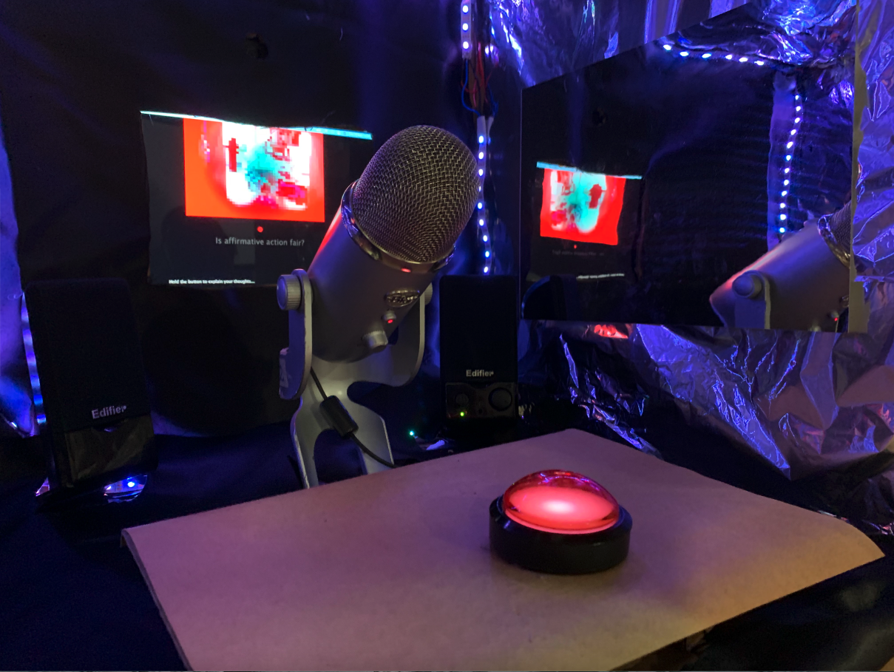

Echo Chamber
- Interaction Lab
- Processing, Arduino
- Interactive Installation
- 4 Weeks

This interactive project served as a final project in the IMA Foundation class Interaction Lab. Creating an experience for users to question their own opinions and diversity in their own political discourse, the Echo Chamber poses controversial and questions for the user to answer while confronted with their own self in a pixelated screen and echoed audio response. The user is forced to reconcile with their own thoughts through the Echo Chamber. Perhaps, an individual has a very liberal view, conservative view, or no view at all. Each experience is completely unique and solitary.
As the user looks into the Echo Chamber, they will find their pixelated reflection on the screen opposite them with a question prompting them to speak into the microphone. The experience is entirely dependent on the individual's interaction with the environment. Perhaps the user will answer the question for a long time. The users' interaction can reflect their individual position in political discourse.
